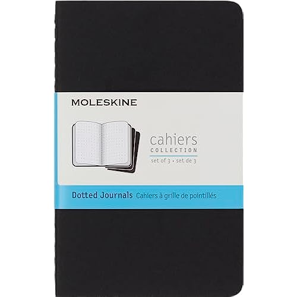

For a long time now, I've carried around one of those Moleskine pocket (cahier) books with me wherever I went for the purpose of writing down my ideas so that I may refer to them later. Phones can be used for the same purpose, though it's not as nice of an experience, so it makes me less likely to actually write my thoughts down if I have to open the notes app and use it.
So, I opted for a 3.5in by 5.5in notebook that fits nicely in my pocket. There was however one problem with the Moleskine book, and it is the same problem that every other pocket book on the market seems to have: waste. Whenever we buy a new book, we really just care for the paper, right? Would it not make more sense to have a single, durable cover in which the paper could be refilled? This is the problem that I've been working to solve, and I have developed over several iterations a functional solution that works for me.
Currently I am working on designing and manufacturing a refillable pocket book using high quality materials. Using full-grain buffalo leather for the cover, and a spring-steel wire clip embedded in the spine makes for a very effective way of holding paper signatures in place such that it functions as a normal journal.
You can find a video of what it looks like hereNow you might be asking yourself, "what am I to do with the paper once it has been used?", and to that I say you should do whatever your heart so desires. For me personally, I keep my paper in a metal box but you could throw the darn paper away for all I care. The paper is replaceable, after all. This is also an important part of the design; the paper signatures can be easily made, using the paper of your choosing. All you need is a ruler, a utility knife, a (big) stapler and some paper.